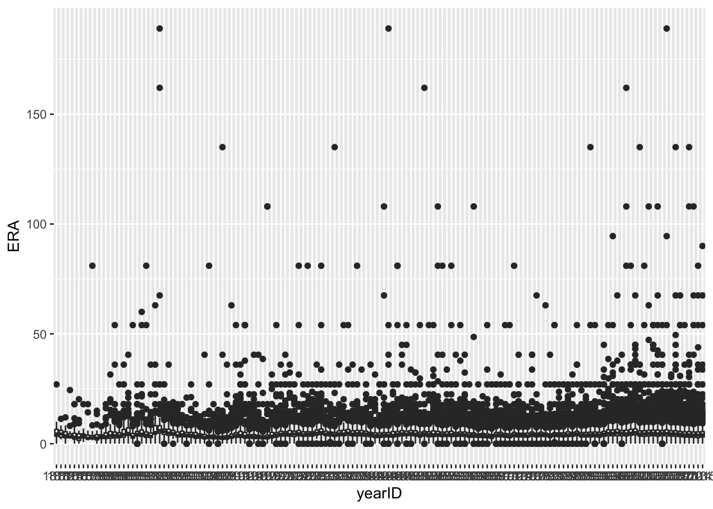
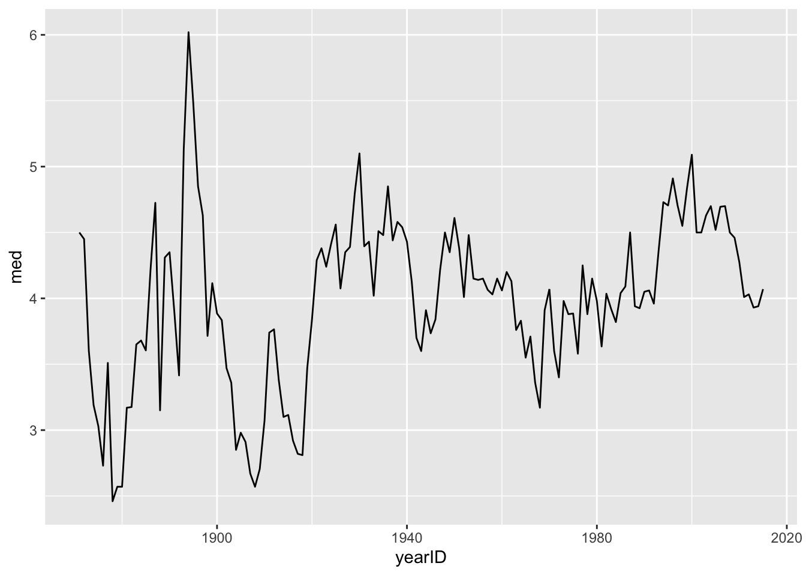
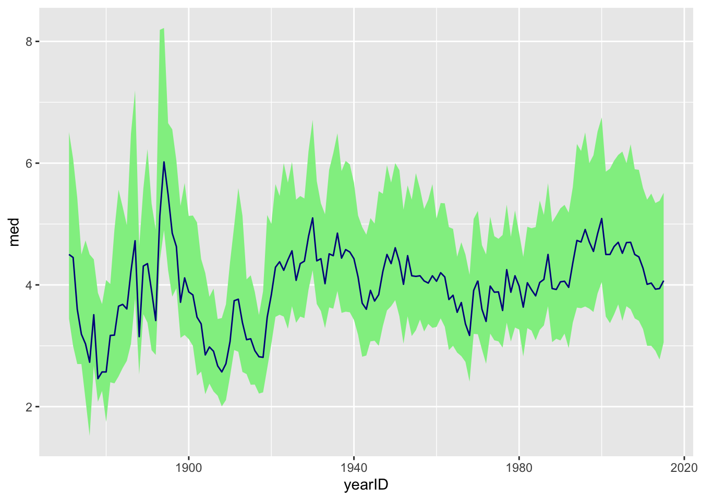
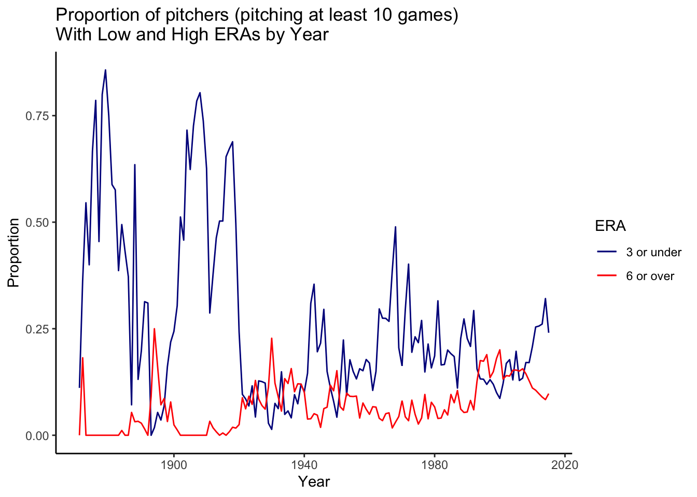
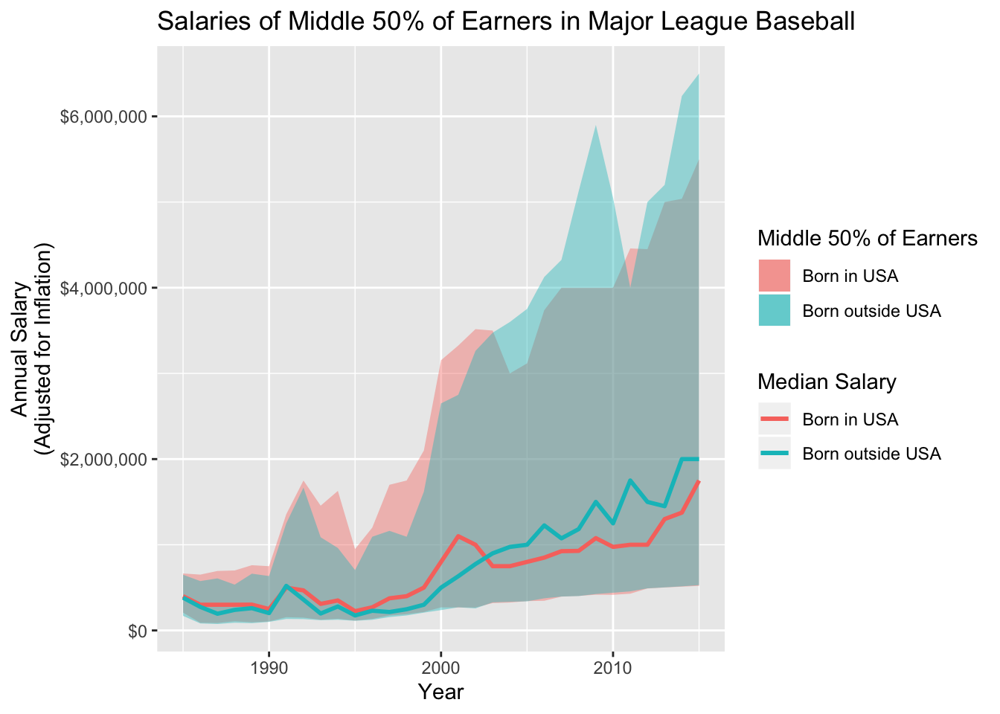

## ── Attaching packages ────────────────────────────────────────── tidyverse 1.2.1 ──## ✔ ggplot2 3.2.1 ✔ purrr 0.3.2
## ✔ tibble 2.1.3 ✔ dplyr 0.8.3
## ✔ tidyr 0.8.3 ✔ stringr 1.4.0
## ✔ readr 1.3.1 ✔ forcats 0.4.0## ── Conflicts ───────────────────────────────────────────── tidyverse_conflicts() ──
## ✖ dplyr::filter() masks stats::filter()
## ✖ dplyr::lag() masks stats::lag()player_data <- read.csv("Master.csv")
pitching_data <- read.csv("Pitching.csv")
salary_data <- read.csv("Salaries.csv")
inflation_index <- read.csv("inflation.csv")pitching_data$yearID <- as.factor(pitching_data$yearID)
ggplot(pitching_data)+geom_boxplot(aes(x=yearID, y=ERA))## Warning: Removed 90 rows containing non-finite values (stat_boxplot).
summary_era <- summarize(group_by(pitching_data, yearID), med = median(ERA, na.rm = T), Q1= quantile(ERA, .25, na.rm = T), Q3 = quantile(ERA, .75, na.rm = T))
summary_era$yearID <- as.numeric(as.character(summary_era$yearID))
ggplot(summary_era)+geom_line(aes(x=yearID, y=med))

pitching_data$ERA <- as.numeric(pitching_data$ERA)
pitching_data_10g <- filter(pitching_data, G>10)
summary_era_2 <- summarize(group_by(pitching_data_10g, yearID), era_below_three_proportion=mean(ERA<=3), era_over_six_proportion=mean(ERA>=6))
summary_era_2$yearID <-as.numeric(as.character(summary_era_2$yearID))
ggplot(summary_era_2) +geom_line(aes(x=yearID, y=era_below_three_proportion, color="3 or under")) +geom_line(aes(x=yearID, y=era_over_six_proportion, color="6 or over")) + scale_color_manual(values = c("3 or under"="darkblue", "6 or over"="red"), name= "ERA")+ xlab("Year") + ylab("Proportion") + ggtitle("Proportion of pitchers (pitching at least 10 games)\nWith Low and High ERAs by Year") +theme_classic()
## Warning: Column `playerID` joining factors with different levels, coercing
## to character vectorusa_born <-filter(summary_salary_inner, summary_salary_inner$birthCountry == "USA")
not_usa <- filter(summary_salary_inner, summary_salary_inner$birthCountry != "USA")
final_salary_usa <- summarize(group_by(usa_born, yearID), us_median=median(salary, na.rm = T), us_Q1 = quantile(salary, .25, na.rm = T), us_Q3 = quantile(salary, .75, na.rm = T))
final_salary_other <- summarize(group_by(not_usa, yearID), other_median=median(salary, na.rm = T), other_Q1 = quantile(salary, .25, na.rm = T), other_Q3 = quantile(salary, .75, na.rm = T))
final_salary_all <- inner_join(final_salary_usa, final_salary_other, by="yearID")
ggplot(final_salary_all) +geom_ribbon(aes(x=yearID, ymin= us_Q1, ymax= us_Q3, fill = "Born in USA"), alpha=0.4) +geom_ribbon(aes(x=yearID, ymin= other_Q1, ymax= other_Q3, fill = "Born outside USA"), alpha=0.4) + geom_line(aes(x=yearID, y=us_median, color = "Born in USA"), size = 1) + geom_line(aes(x=yearID, y= other_median, color = "Born outside USA"), size =1)+scale_y_continuous(labels = scales::dollar) + ylab("Annual Salary\n(Adjusted for Inflation)") +xlab("Year") +ggtitle("Salaries of Middle 50% of Earners in Major League Baseball") + labs(fill = "Middle 50% of Earners", colour= "Median Salary")
For inquiries email Ted Getselman at tg614@georgetown.edu.